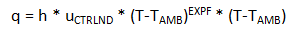
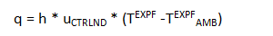

Thermal Load Options dialog box
The Thermal Load Options dialog box contains advanced options for creating or modifying thermal studies. You can open the dialog box using the Thermal Load Options button in the Create Study (or Modify Study) dialog box. You can set default values for these options using the Simulation tab in the Solid Edge Options dialog box.
- Radiation
-
- Enclosure Ambient Element
-
For a radiation enclosure load, specifies the ambient temperature within the enclosure.
Values can be from -1e+09 to 1e+09.
- Free Convection
-
- Alternate Formulation
-
When checked, specifies that the Alternate method is used to determine the free convection exponent.
The Standard method and the Alternate method are defined by the following equations.
- Standard method
-
The Standard method uses this convection exponent: EXPF=0.

- Alternate method
-
Use the Alternate method to specify a different value for the convection exponent.

Variables
Definition
q
Heat transfer rate
h
Free convection heat transfer coefficient
u CTRLND
Temperature (of the control node) for time-dependent heat transfer coefficient
T
Temperature (surface or internal)
T AMB
Temperature (ambient or surrounding)
EXPF
Convection exponent
Note:These options are used by NX Nastran and MSC.Nastran. To learn more about them, refer to the NX Nastran documentation.
- Convection Exponent
-
Specifies the exponent to use when calculating the alternative convection temperature format.
Values can be from -9.99E+30 to 9.99E+30.
Note:The Convection Exponent is the value shown as EXPF in the above equations.
How do I
Define a loadActivity: Apply a bearing load
Activity: Apply a centrifugal load
Activity: Apply a torque load
Activity: Apply a body temperature load
Learn more
Creating and using loadsLoad labels and symbols
Structural and body loads
Thermal loads
External loads (imported loads)
Loads directional steering wheel
Look up more details
Loads command barRadiation Load Options dialog box
Color dialog box
Graphic Symbol Size dialog box